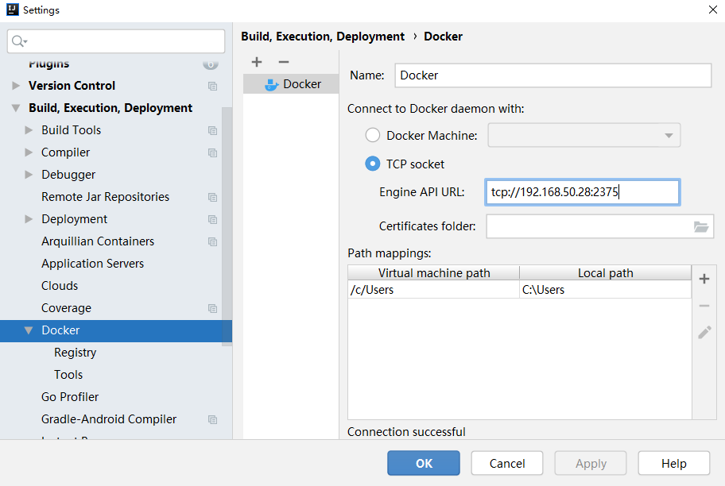
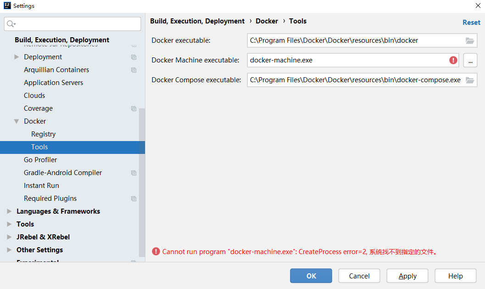

<!DOCTYPE html>
<html>
  <!DOCTYPE html>
<html lang="zh-CN">
<head><meta name="generator" content="Hexo 3.9.0">
  <meta http-equiv="content-type" content="text/html; charset=utf-8">
  <meta http-equiv="X-UA-Compatible" content="IE=Edge,chrome=1">
  
  <title>IDEA 部署 Docker 到 WSL2 - zgshen&#39;s blog</title>
  <meta name="viewport" content="width=device-width, initial-scale=1.0, maximum-scale=1.0, user-scalable=0">
  
  <meta name="keywords" content="其他">
  
  
    <link rel="shortcut icon" type="image/x-icon" href="/favicon.ico?v=1.02">
  
  
    <link rel="alternate" href="/atom.xml " title="zgshen&#39;s blog" type="application/atom+xml">
  

  <link rel="stylesheet" href="/css/style.css">
  <script src="https://cdn.jsdelivr.net/npm/pangu@4.0.7/dist/browser/pangu.min.js"></script>
  <script>
    pangu.spacingElementByClassName('post');
    document.addEventListener('DOMContentLoaded', () => {
      // listen to any DOM change and automatically perform spacing via MutationObserver()
      pangu.autoSpacingPage();
    });
  </script>
</head></html>
  <body>
    <div class="container">
      <header class="header">
  <div class="blog-title">
    <a href="/" class="logo">zgshen&#39;s blog</a>
    <div class="subtitle"></div>
  </div>
  <nav class="navbar">
    <ul class="menu">
      
        <li class="menu-item">
          <a href="/" class="menu-item-link">主页</a>
        </li>
      
        <li class="menu-item">
          <a href="/about" class="menu-item-link">关于</a>
        </li>
      
        <li class="menu-item">
          <a href="https://www.google.com/search?q=site:zguishen.com" class="menu-item-link">搜索</a>
        </li>
      
        <li class="menu-item">
          <a href="/links" class="menu-item-link">友链与收藏</a>
        </li>
      
    </ul>
  </nav>
</header>
<article class="post">
  <div class="post-title">
    <h1 class="article-title">IDEA 部署 Docker 到 WSL2</h1>
  </div>
   <div class="post-meta">
    <span class="post-time">2021-07-19</span>
  </div>
  <div class="post-content">
    
	
    <p>本地环境 Windows10+WSL2(Ubuntu)</p>
<p>在服务器安装 Docker 之后，开启远程访问</p>
<p> <code>sudo vi /etc/default/docker</code> 修改配置</p>
<figure class="highlight bash"><table><tr><td class="gutter"><pre><span class="line">1</span><br><span class="line">2</span><br><span class="line">3</span><br></pre></td><td class="code"><pre><span class="line"><span class="comment"># 开启远程访问 -H tcp://0.0.0.0:2375</span></span><br><span class="line"><span class="comment"># 开启本地套接字访问 -H unix:///var/run/docker.sock</span></span><br><span class="line">DOCKER_OPTS=<span class="string">"-H tcp://0.0.0.0:2375 -H unix:///var/run/docker.sock"</span></span><br></pre></td></tr></table></figure>
<p><code>sudo service docker restart</code> 重启</p>
<p>Idea 安装 Docker 插件后，设置填写地址 tcp://192.168.50.28:2375 ，成功连接的话有 Connection Successful 提示</p>
<p></p>
<p>Tools 选项配置，需要先安装 Windows 版本 Docker，装完把程序关掉，开机自启关掉，因为我不想多开一个程序，Ubuntu 里已经有 Docker 了，这里只是要用到 docker-compose.exe 在 Windows 环境做下容器编排而已。Docker Machine 用不着也不用管。</p>
<p></p>
<p>一般的 Dockerfile 文件和 docker-compose.yml 文件参考</p>
<figure class="highlight bash"><table><tr><td class="gutter"><pre><span class="line">1</span><br><span class="line">2</span><br><span class="line">3</span><br><span class="line">4</span><br><span class="line">5</span><br><span class="line">6</span><br><span class="line">7</span><br><span class="line">8</span><br><span class="line">9</span><br></pre></td><td class="code"><pre><span class="line">FROM ubuntu:latest</span><br><span class="line"></span><br><span class="line">COPY target/*.jar /app.jar</span><br><span class="line"></span><br><span class="line">ENV JAVA_HOME=<span class="string">"/usr/lib/jdk1.8"</span></span><br><span class="line"></span><br><span class="line">ENV PATH=<span class="string">"<span class="variable">$&#123;PATH&#125;</span>:<span class="variable">$&#123;JAVA_HOME&#125;</span>/bin:<span class="variable">$&#123;JAVA_HOME&#125;</span>/sbin"</span></span><br><span class="line"></span><br><span class="line">ENTRYPOINT [ <span class="string">"java"</span>, <span class="string">"-jar"</span>, <span class="string">"/app.jar"</span> ]</span><br></pre></td></tr></table></figure>
<figure class="highlight bash"><table><tr><td class="gutter"><pre><span class="line">1</span><br><span class="line">2</span><br><span class="line">3</span><br><span class="line">4</span><br><span class="line">5</span><br><span class="line">6</span><br><span class="line">7</span><br><span class="line">8</span><br><span class="line">9</span><br><span class="line">10</span><br><span class="line">11</span><br><span class="line">12</span><br><span class="line">13</span><br></pre></td><td class="code"><pre><span class="line">version: <span class="string">'3'</span></span><br><span class="line">services:</span><br><span class="line">  last:</span><br><span class="line">    build:</span><br><span class="line">      context: .</span><br><span class="line">      dockerfile: Dockerfile</span><br><span class="line">    ports:</span><br><span class="line">      - <span class="string">"18080:8080"</span></span><br><span class="line">    volumes:</span><br><span class="line">      - /usr/lib/jvm/java-8-openjdk-amd64:/usr/lib/jdk1.8 <span class="comment">#宿主机 jdk 映射给容器使用</span></span><br><span class="line">    tty: <span class="literal">true</span></span><br><span class="line">    network_mode: bridge</span><br><span class="line">    restart: always</span><br></pre></td></tr></table></figure>
<p>使用 Docker-compose 创建 Docker 容器</p>
<p></p>
<p>Compose files 选择刚创建的 docker-compose.yml 文件</p>
<p>运行</p>
<figure class="highlight bash"><table><tr><td class="gutter"><pre><span class="line">1</span><br><span class="line">2</span><br><span class="line">3</span><br><span class="line">4</span><br><span class="line">5</span><br><span class="line">6</span><br><span class="line">7</span><br><span class="line">8</span><br><span class="line">9</span><br><span class="line">10</span><br><span class="line">11</span><br><span class="line">12</span><br><span class="line">13</span><br><span class="line">14</span><br><span class="line">15</span><br><span class="line">16</span><br><span class="line">17</span><br><span class="line">18</span><br><span class="line">19</span><br><span class="line">20</span><br><span class="line">21</span><br><span class="line">22</span><br><span class="line">23</span><br><span class="line">24</span><br><span class="line">25</span><br><span class="line">26</span><br><span class="line">27</span><br><span class="line">28</span><br><span class="line">29</span><br></pre></td><td class="code"><pre><span class="line">Deploying <span class="string">'Compose: lin-test'</span>...</span><br><span class="line"><span class="string">"C:\Program Files\Docker\Docker\resources\bin\docker-compose.exe"</span> -f D:\Project\gitFile\lin\lin-test\docker-compose.yml up -d</span><br><span class="line">Building last</span><br><span class="line">Sending build context to Docker daemon  61.72MB</span><br><span class="line">Step 1/5 : FROM ubuntu:latest</span><br><span class="line"> ---&gt; c29284518f49</span><br><span class="line">Step 2/5 : COPY target/*.jar /app.jar</span><br><span class="line"> ---&gt; f13f1a3f4a0d</span><br><span class="line">Step 3/5 : ENV JAVA_HOME=<span class="string">"/usr/lib/jdk1.8"</span></span><br><span class="line"> ---&gt; Running <span class="keyword">in</span> ea05d01bf802</span><br><span class="line">Removing intermediate container ea05d01bf802</span><br><span class="line"> ---&gt; 9bb4f1a6be38</span><br><span class="line">Step 4/5 : ENV PATH=<span class="string">"<span class="variable">$&#123;PATH&#125;</span>:<span class="variable">$&#123;JAVA_HOME&#125;</span>/bin:<span class="variable">$&#123;JAVA_HOME&#125;</span>/sbin"</span></span><br><span class="line"> ---&gt; Running <span class="keyword">in</span> 73ab542794a5</span><br><span class="line">Removing intermediate container 73ab542794a5</span><br><span class="line"> ---&gt; a6d791e7bd7c</span><br><span class="line">Step 5/5 : ENTRYPOINT [ <span class="string">"java"</span>, <span class="string">"-jar"</span>, <span class="string">"/app.jar"</span> ]</span><br><span class="line"> ---&gt; Running <span class="keyword">in</span> e1704a59d50b</span><br><span class="line">Removing intermediate container e1704a59d50b</span><br><span class="line"> ---&gt; 8ee7a6f5b53a</span><br><span class="line">Successfully built 8ee7a6f5b53a</span><br><span class="line">Successfully tagged lin-test_last:latest</span><br><span class="line">SECURITY WARNING: You are building a Docker image from Windows against a non-Windows Docker host. All files and directories added to build context will have <span class="string">'-rwxr-xr-x'</span> permissions. It is recommended to double check and reset permissions <span class="keyword">for</span> sensitive files and directories.</span><br><span class="line"></span><br><span class="line">Use <span class="string">'docker scan'</span> to run Snyk tests against images to find vulnerabilities and learn how to fix them</span><br><span class="line">Image <span class="keyword">for</span> service last was built because it did not already exist. To rebuild this image you must use `docker-compose build` or `docker-compose up --build`.</span><br><span class="line">Creating lin-test_last_1 ... </span><br><span class="line">Creating lin-test_last_1 ... <span class="keyword">done</span></span><br><span class="line"><span class="string">'Compose: lin-test'</span> has been deployed successfully.</span><br></pre></td></tr></table></figure>
  </div>
  <div class="post-footer">
    
      <ul class="post-tag-list"><li class="post-tag-list-item"><a class="post-tag-list-link" href="/tags/其他/">其他</a></li></ul>
    

    <a href="#top" class="top">返回顶部</a>
  </div>
</article>
<footer>
  &copy; 2021
  <span class="author">
    zguishen
  </span>
</footer>
    </div>
	<script async src="https://www.googletagmanager.com/gtag/js?id=GA_MEASUREMENT_ID"></script>
	<script>
	  window.dataLayer = window.dataLayer || [];
	  function gtag(){dataLayer.push(arguments);}
	  gtag('js', new Date());
	  gtag('config', 'UA-106347761-1');
	</script>
  </body>
</html>